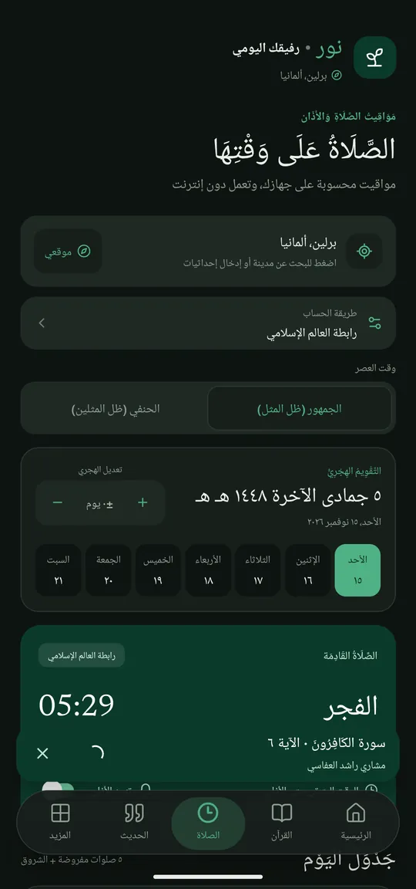
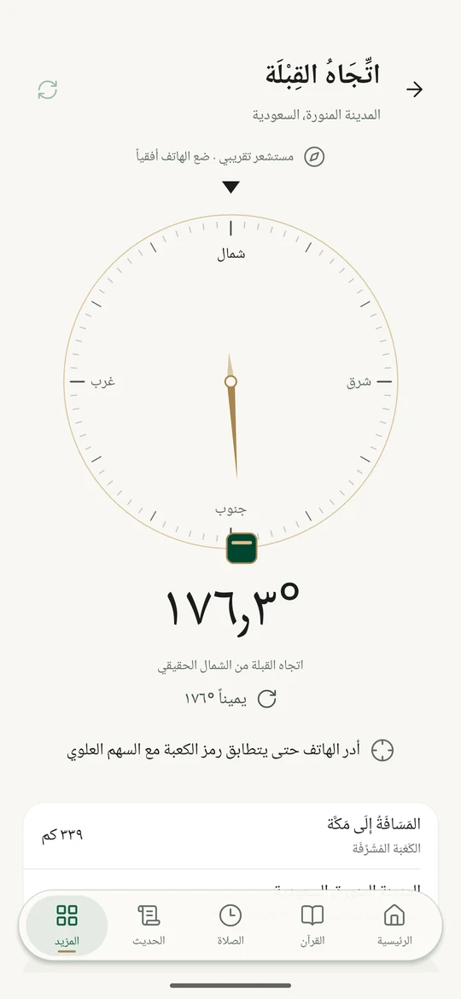
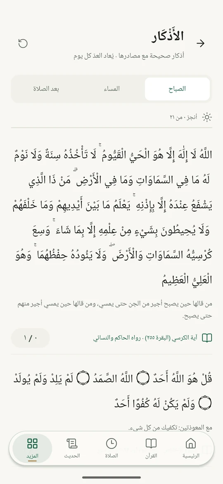
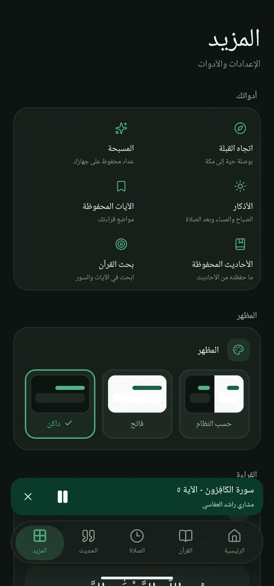

A calm Islamic companion
Quran, prayer times and adhkar, quietly together.
A calm, ad-free Islamic companion. Read and hear the Quran, check prayer times, find the Qibla and keep your adhkar. No account, and your data stays on your device.
The app will be available on both stores soon.


What is in Noor
Everything for your day, in one uncluttered app.
Quran
Read the Uthmani text of all 114 surahs with an optional English translation, and search verses.
Listen, and go offline
Listen verse by verse with the reciter you choose. Download the Quran text, tafseer and recitations you want, then read and listen without a connection.
Prayer times and Qibla
Times calculated on your device from your location or a city you choose, with your choice of calculation method and Asr convention, and optional reminders for each prayer. Plus a compass that points to the Qibla using your location and your phone’s sensors.
Adhkar and tasbih
Morning, evening and after-prayer adhkar with their sources, and a digital tasbih that moves on to the next dhikr automatically.
Hadith
The Forty Hadith of Imam al-Nawawi with explanations, plus the collections of al-Bukhari and Muslim. Save hadith to revisit later.
- Read the privacy policy
Private by design
No account. No ads. No tracking.
Made to be calm
- Light or dark theme
- Arabic-first, right-to-left layout
- Arabic or Western numerals
- Bookmarks and reading position saved on your device
A look inside
Scroll sideways to browse the screens.
- Light
 Dark
DarkRead and listen to the Quran - Light
 Dark
Dark
Prayer times, on your device 
Find the Qibla direction 
A calm digital tasbih 
Morning and evening adhkar 
Light or dark, as you prefer
Privacy
Privacy by design
No account. No ads. No tracking. Your data stays on your device.
Read the privacy policyNo account
No sign-in and no e-mail address. Open the app and use it.
No ads, no tracking
No analytics, no advertising, and no server of our own.
Location stays on device
Your location is used on your device to calculate prayer times and the Qibla. Prefer not to share it? Pick a city instead.
Local notifications
Prayer reminders are scheduled on your device. There is no push server.
Good to know
Do I need an account?
No. Noor has no accounts and no sign-in. Open it and use it.
Does Noor work offline?
Partly. Quran text, tafseer and recitations are fetched from public services the first time you use them. From More → Offline content you can download them and then read and listen without a connection. Prayer times, the Qibla compass, the tasbih and your bookmarks work without internet.
Can prayer times differ from my mosque?
Times are calculated on your device from your location and the date, and you can choose the calculation method and Asr convention. They can differ by a few minutes from your local mosque’s timetable, so please confirm with your mosque.
I denied location permission. Can I still get prayer times?
Yes. In Prayer, choose a city from the list or search for one. Noor then calculates the times for it without needing location permission.
What data does Noor collect about me?
The developer does not receive, store or sell your personal data. There are no accounts, no ads and no analytics, and your bookmarks and settings stay on your device. The full details are in the privacy policy.
More answers on the support page
Please note
Prayer times can differ by a few minutes from your local mosque’s timetable, so please confirm with your mosque. Qibla accuracy depends on your phone’s compass calibration. Please verify rulings and hadith gradings with a qualified scholar.
Sources and licences are listed inside the app: More → Sources and thanks.
Begin your day calmly
Noor on your phone: Quran, prayer times and adhkar in one place. The app will be available on both stores soon.